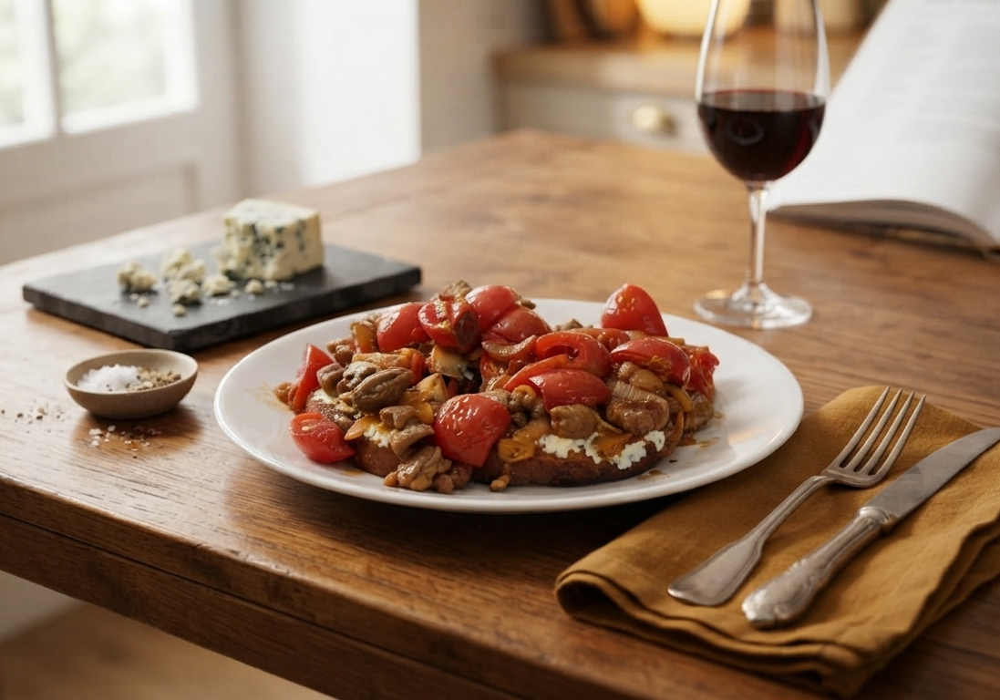

Ekşi mayalı çıtır baget üzerinde; mühürlenmiş kuzu kuşbaşı, karamelize soğan, domates ve rokfor peynirinin dengeli buluşması.

Bu reçete, kuzu etinin yoğun etsi karakterini, rokfor peynirinin keskin ve tuzlu aromasıyla dengeleyen sofistike bir çalışma. Karamelize soğan ve turşudan gelen asidite, yemeğe katmanlı bir derinlik kazandırırken, ekşi mayalı ekmek tabanı tüm bu aromaları taşımak için gereken yapısal desteği sunuyor.
Kuzu etinin yüksek kaliteli protein yapısı, fermente rokfor peynirinin sağladığı probiyotik değerlerle birleşerek besleyici bir öğün oluşturuyor. Ekşi mayalı bagetin düşük glisemik indeksli yapısı, kan şekeri üzerinde daha dengeli bir etki yaratırken; kuzu etindeki B12 ve demir mineralleri, öğünü besin değeri açısından oldukça zengin kılıyor. Peynirden gelen kontrollü tuz kullanımı, ekstra tuz ilavesini gereksiz kılarak daha dikkatli bir beslenme profili sunuyor.
| Bileşen | Kalori (kcal) | Protein (g) | Yağ (g) | KH (g) | Öne Çıkan Vitamin/Mineral |
|---|---|---|---|---|---|
| Kuzu Kuşbaşı (80g) | 200 | 16 | 14 | 0 | Demir, B12 |
| Ekşi Mayalı Baget (65g) | 169 | 5.2 | 0.8 | 35 | B Vitaminleri |
| Rokfor Peyniri (25g) | 87.5 | 5.5 | 7.5 | 0.5 | Kalsiyum, Vit A |
| Kokteyl Domates (100g) | 18 | 1 | 0.2 | 4 | Vit C, Potasyum |
| Soğan (50g) | 20 | 0.5 | 0.1 | 4.5 | Vit C |
| Sivri Biber Turşusu (20g) | 5 | 0.3 | 0 | 1 | Vit A, C |
| Zeytinyağı (3 YK) | 405 | 0 | 45 | 0 | - |
| TOPLAM | 904.5 | 28.5 | 67.6 | 45 | - |